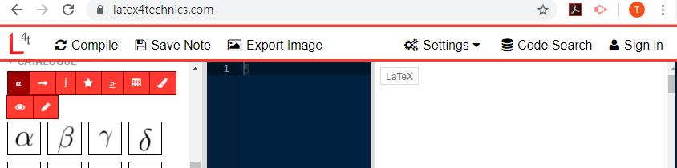
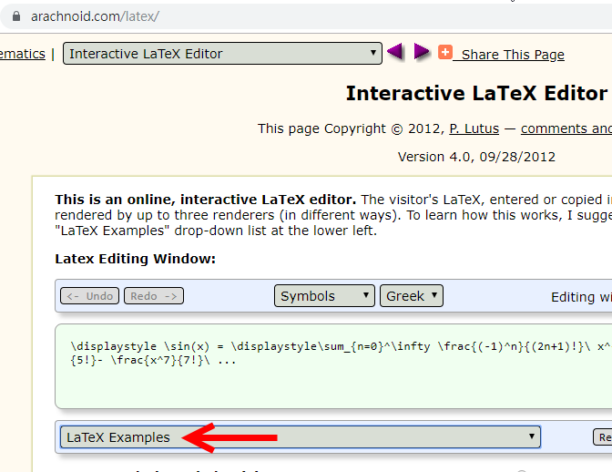
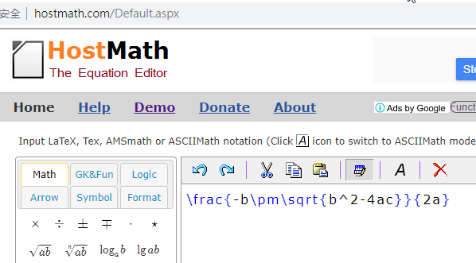
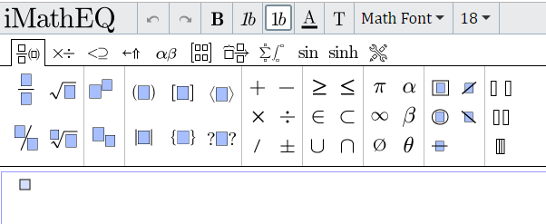
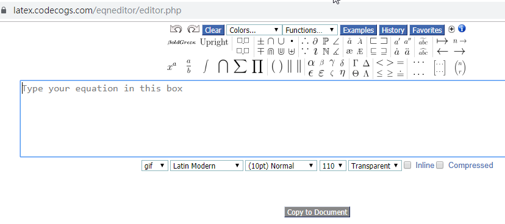
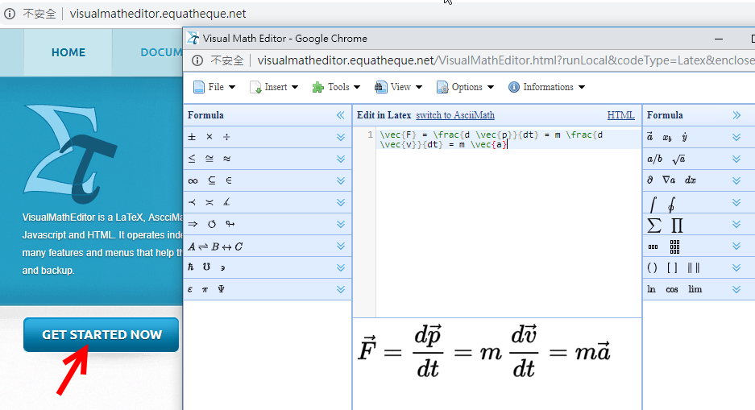
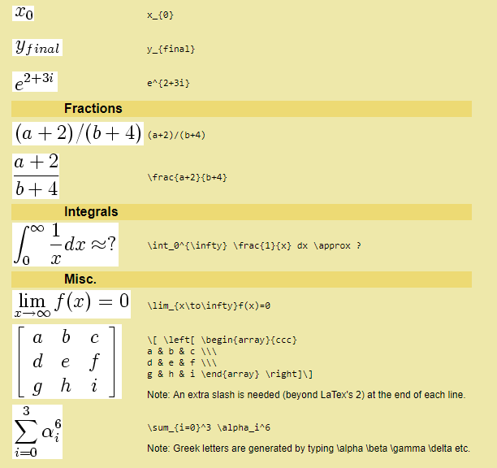

| UTF-8 Mathematical Operators(w3school) |
| MathJax(web) |
Template(web)
|
<script type="text/javascript" async src="https://cdnjs.cloudflare.com/ajax/libs/mathjax/2.7.5/MathJax.js?config=TeX-MML-AM_CHTML" async> </script> |
| 使用 MathJax 把 LaTeX 或 MathML 數學式子放進網頁(web) Note:
數學式(LaTex) 含有 "&" (如:矩陣)者
若貼在BlueGriffon原始程式碼中發生錯誤("&" 與XML parser 衝突)
將 "&" 改為 "&"
或
直接貼在設計模式中即可 |
| Example1 |
LaTeX的數學公式有兩種：行中公式和獨立公式。 行中公式放在文中與其它文字混編，獨立公式單獨成行。 行中公式可以用如下兩種方法表示： \(數學公式\) 或 $數學公式$ 獨立公式可以用如下兩種方法表示： \[數學公式\] 或 $$數學公式$$ 建議: 行中公式用： \(數學公式\) 獨立公式用： $$數學公式$$ |
| Google Doc 安裝外掛 MathType 輸入完成 按Ctrl+Shift+L 產生LaTex |
| TeX equation editor (Mathematical Formulas)(link) |
| convert image to Latex(mathpix)(link) |
| Latex4Technics(web)  Interactive LaTeX Editor(web)  Host Math(web)  iMathEQ(web)(付費)  線上LaTex語法(web)  Visual Math Editor(web)  EquationEditor(web) (To Latex有問題) MathML Example(here) Latex+MathML Example(here) |
 |
| 數學排版(web) LaTex 語言 |
| 短除法(web)使用google doc之外掛 MathType 產生 Ctrl+Sfift+L |